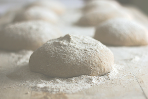
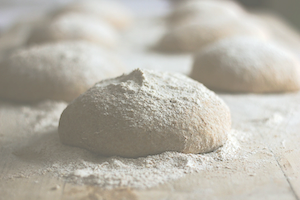

Valget af mel afhænger af, hvilket bagværk du ønsker at lave. Skal brødet for eksempel være groft, have en sprød rustik skorpe eller indeholde kerner? At komme ud til melhylden i et supermarked kan virke uoverskueligt. For hvad skal alle de forskellige slags mel og kerner anvendes til? Her kan du læse om, hvad der karakteriserer de mest gængse meltyper og kerner, samt hvilke typer bagværk de er velegnede til.
Hvedemel
Hvede er den mest udbredte kornsort herhjemme. Hvedemel fremstilles af hvedekornets kerne. Hvor meget af kornets kerne der anvendes, afhænger af den udmalingsgrad, man fastlægger på møllen. Jo højere udmalingsgrad, jo tættere kommer man skallen, når melet males - og jo mere af kornet kan man udnytte til hvedemel.
Hvedemel kan købes med både høj og lav bagekraft. Bagekraften er ensbetydende med melets evne til at danne gluten af god kvalitet. Gluten er det som gør, at en dej kan hæve og beholde sin struktur under bagningen. Hvedemelets styrke er således, at det indeholder gluten. Gluten binder væske og giver dermed hvededejen dens elastiske egenskaber.
Mel med høj bagekraft er specielt velegnet til bagning af brød og øvrige bagværker, der skal hæve. Har melet en lav bagekraft vil dit bagværk blive mere kompakt og gråt. Det er derfor vigtigt ved bagning af brød og deje der skal hæve at købe en god kvalitets hvedemel.
Fuldkornshvedemel
Fuldkornshvedemel er groftmalet hvedekorn, der indeholder alt fra hvedekornet. Dette giver melet et højere fiberindhold end almindeligt hvedemel. Omvendt har fuldkornshvedemel i sig selv en dårlig bageevne og bruges derfor sammen med almindeligt hvedemel.
En tommelfingerregel siger, at melet bør blandes med ca. 50% almindeligt hvedemel for at kunne hæve op og blive et flot brød. Fuldkornshvedemel anvendes når brødet skal have en grovere struktur.
Grahamsmel
Grahamsmel er en groftmalet hvedemel, hvor de næringsholdige skaller ikke er sorteret fra. Ved fremstilling af grahamsmel foregår der således ingen frasigtning af skaldele, og grahamsmel er derfor noget mørkere end hvedemel. I grovhed ligger det mellem fuldkornshvedemel og hvedemel. Ligesom fuldkornshvedemel er grahamsmel lavet af hele hvedekornet, men blot med en noget finere formaling.
Grahamsmel har en svagere bageevne end almindeligt hvedemel, og man kan ikke bage brød af grahamsmel alene. Det skal blandes med almindelig hvedemel for at opnå en tilstrækkelig god bageevne.Knuste eller skårne rugkerner
Vi kender især rug fra det traditionelle danske rugbrød. Her anvendes rugkernerne typisk til fuldkornsrugbrød. Ligesom andre kerner i bagværk skal rugkerner enten lægges i blød dagen før i koldt vand eller have et opkog i 2-3 minutter lige inden anvendelse. Kernerne mister hverved deres umiddelbare hårdhed.
Knækkede eller knuste hvedekerner
Knækkede eller knuste hvedekerner er hvedekerner, som man på møllen har “knust”.
De knækkede/knuste hvedekerner bruges ofte i grovbrød, hvor de giver brødet en sødere smag. Knækkede/knuste hvedekerner optager væsken hurtigere og bedre end hele hvedekerner, og de er samtidig med til at give det grove bagværk en blød konsistens. Dog er kernerne ikke så synlige i det færdige brød som hele hvedekerner.
De knækkede/knuste hvedekerner skal, ligesom hele hvedekerner, koges eller sættes i blød, før de kan anvendes. Kernerne mister derved deres umiddelbare hårdhed, og brødet tilføres saft og kraft.
Rugmel
Rug er en meget robust kornsort og er sammen med hvede de kornsorter, der typisk anvendes ved bagning. Vi kender især rug fra det traditionelle danske rugbrød. Rugmelets protein danner ikke gluten. Det betyder, at rugbrød ikke kan hæve på samme måde som hvededej.
Rugmel har en rig smag og aroma, og det kan derfor anvendes i næsten alt slags grovbrød. Rugmel er velegnet til at blande med andre meltyper.
Speltmel
Spelt er en gammeldags kornsort, der daterer sig til 6000 år før Kristus. Spelt har fået en renæssance de senere år, fordi melet giver rigtig velsmagende brød med en fin aroma.
Speltmel er kendetegnet ved sine gode bageegenskaber - dog indeholder melet knap så kraftig gluten som traditionel hvede. Derfor må dej af speltmel ikke æltes så kraftigt, da dejen herved kan blive meget slap. Spelt har en behagelig, sød smag, og det færdige brød får en karakteristisk gylden farve. Speltmel kan i dag fås i forskellige grovheder.
Durummel
Durumhvede er meget gule finthakkede hvedekerner, som er helt fri for skaldele og hvedekim. Durumhvede har ingen stor hæveevne og kan ikke benyttes alene til brødbagning, men skal altid blandes med almindeligt hvedemel.
Kendetegnet for durumhvede er dens gyldne farve. Brød bagt med durum får en fyldigere smag, mere struktur og et smukt rustikt udseende, som mange brødelskere godt kan lide. En dej af durum passer godt til lange ligge- og hæveprocesser.
Sigtemel
Sigtemel er fremstillet af malet og sigtet rug blandet med sigtet hvedemel. Sigtemel er velegnet til brød med længere hævetid.
 
